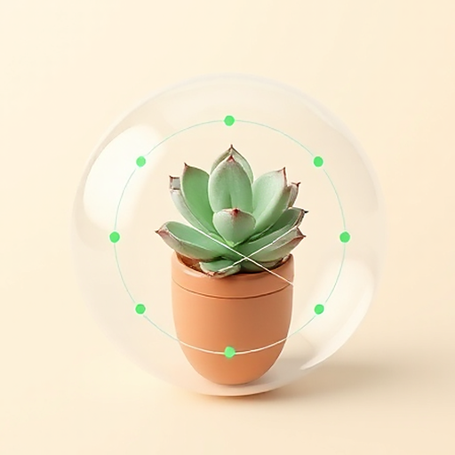

Escanea tu planta con 4 fotos y la IA te dice cómo está.
3D Plant Health es una app para iPhone y iPad que escanea tu planta con 4 fotos, una por cada lado, con la cámara (y el LiDAR, si tu iPhone o iPad lo tiene), la mide, revisa su salud con inteligencia artificial y te dice cuándo regarla.
En la App Store: «3D Plant Health: Plantas IA». iPhone y iPad con iOS 17 o posterior. Gratis, con Pro opcional.
Una foto por cada lado de la planta (frente, derecha, detrás e izquierda), con «Foto 1 de 4», flecha y disparo automático; con la planta contra una pared bastan 2 lados. Después, si quieres, la vista de águila (desde arriba) y una foto de cerca de una hoja. Con LiDAR crea una nube de puntos 3D en color que puedes girar y mide altura, anchura y copa; sin LiDAR las medidas son estimadas.
Con la linterna trasera, la app toma pares de fotos sin flash y con flash y corrige el color de la luz de la habitación, para ver mejor manchas, amarilleo o clorosis.
La IA (Claude) mira las tomas y da la especie probable, el estado de la planta, qué ha visto y en qué toma, y qué hacer. Puede equivocarse: es una orientación, no un diagnóstico.
Una base propia con riego, luz, temperatura, sustrato y toxicidad de 222 especies. Si la planta está en la base, mandan sus datos; la IA solo rellena lo que falta.
Guarda tus plantas con su maceta, sustrato y luz. La app calcula cuándo regar y cómo va la hidratación de la planta, y te lo recuerda con avisos en el propio aparato.
Tus plantas, sus fotos y tus riegos no se suben a ningún servidor. Las fotos para analizar solo salen cuando lo pides y aceptas el permiso de IA, y no se guardan.
Sí. Se descarga gratis y deja escanear plantas, usar «Mis plantas» con riego y recordatorios y hacer análisis con IA sin límite (Claude Haiku 5.5). La versión gratis muestra un banner, un anuncio de apertura (1 de cada 4 aperturas) y, en cada análisis, un anuncio con recompensa que ves mientras se analiza (el botón dice solo «Analizar» y, debajo, en letra pequeña, «Incluye un anuncio breve»). Pro, una suscripción opcional, quita el banner y el anuncio de apertura, pero no el anuncio breve de cada análisis, que ven todos.
Pro cuesta 1,99 € al mes o 14,99 € al año en España (en otros países, el precio de tu App Store), con 7 días de prueba gratis la primera vez. Incluye: sin banner ni anuncio de apertura, análisis con Claude Sonnet 5.5 (más preciso) y más tomas por análisis (hasta 10). Se cancela cuando quieras en los ajustes de tu Apple ID.
No. Con la versión gratis puedes hacer todos los análisis que quieras: cada uno incluye un anuncio breve que ves mientras se analiza tu planta, también con Pro (que quita el banner y el anuncio de apertura, no ese anuncio). Si la app te dice «Demasiados análisis seguidos», espera un rato y vuelve a intentarlo.
3D Plant Health es una app para iPhone y iPad que escanea tu planta con 4 fotos (frente, derecha, detrás e izquierda), la analiza con IA y te da la especie probable, su estado (por ejemplo plagas, hongos o exceso o falta de riego), qué ha visto en cada toma y qué hacer. Es una orientación, no un diagnóstico garantizado ni sustituye a un especialista: la IA puede equivocarse.
Sí. Sin LiDAR bastan la cámara y el flash, y las medidas son estimadas. Con LiDAR (en los modelos que lo tienen) la app crea una nube de puntos 3D en color y mide altura, anchura y copa con medidas reales.
Sí. Funciona en iPhone y en iPad con iOS o iPadOS 17 o posterior y una cámara trasera con seguimiento 3D (ARKit).
No. Por ahora 3D Plant Health solo existe para iPhone y iPad; no hay versión para Android ni para Mac.
No se guardan en ningún servidor. Solo se envían al analizar, con tu permiso, a nuestro servidor y a Anthropic (Claude), que no las guarda en nuestro servidor ni las usa para entrenar. Tus plantas y sus fotos se quedan solo en tu aparato, y puedes retirar el permiso de IA en Ajustes.
El escáner, Mis plantas y el riego sí. El análisis con IA necesita internet.
Español (de España y de Latinoamérica), inglés, portugués (Brasil), alemán, francés e italiano.
Escanea tu planta con 4 fotos y la IA te dice cómo está.
3D Plant Health es una app para iPhone y iPad que escanea tu planta con 4 fotos, una por cada lado, con la cámara (y el LiDAR, si tu iPhone o iPad lo tiene), la mide, revisa su salud con inteligencia artificial y te dice cuándo regarla.
En la App Store: «3D Plant Health: Plantas IA». iPhone y iPad con iOS 17 o posterior. Gratis, con Pro opcional.
Una foto por cada lado de la planta (frente, derecha, atrás e izquierda), con «Foto 1 de 4», flecha y disparo automático; con la planta contra una pared bastan 2 lados. Después, si quieres, la vista de águila (desde arriba) y una foto de cerca de una hoja. Con LiDAR crea una nube de puntos 3D a color que puedes girar y mide altura, ancho y copa; sin LiDAR las medidas son estimadas.
Con la linterna trasera, la app toma pares de fotos sin flash y con flash y corrige el color de la luz de la habitación, para ver mejor manchas, amarilleo o clorosis.
La IA (Claude) mira las tomas y da la especie probable, el estado de la planta, qué ha visto y en qué toma, y qué hacer. Puede equivocarse: es una orientación, no un diagnóstico.
Una base propia con riego, luz, temperatura, sustrato y toxicidad de 222 especies. Si la planta está en la base, mandan sus datos; la IA solo rellena lo que falta.
Guarda tus plantas con su maceta, sustrato y luz. La app calcula cuándo regar y cómo va la hidratación de la planta, y te lo recuerda con avisos en el propio aparato.
Tus plantas, sus fotos y tus riegos no se suben a ningún servidor. Las fotos para analizar solo salen cuando lo pides y aceptas el permiso de IA, y no se guardan.
Sí. Se descarga gratis y deja escanear plantas, usar «Mis plantas» con riego y recordatorios y hacer análisis con IA sin límite (Claude Haiku 5.5). La versión gratis muestra un banner, un anuncio de apertura (1 de cada 4 aperturas) y, en cada análisis, un anuncio con recompensa que ves mientras se analiza (el botón dice solo «Analizar» y, debajo, en letra pequeña, «Incluye un anuncio breve»). Pro, una suscripción opcional, quita el banner y el anuncio de apertura, pero no el anuncio breve de cada análisis, que ven todos.
Pro cuesta $39 MXN al mes o $299 MXN al año en México (en otros países, el precio de tu App Store), con 7 días de prueba gratis la primera vez. Incluye: sin banner ni anuncio de apertura, análisis con Claude Sonnet 5.5 (más preciso) y más tomas por análisis (hasta 10). Se cancela cuando quieras en los ajustes de tu Apple ID.
No. Con la versión gratis puedes hacer todos los análisis que quieras: cada uno incluye un anuncio breve que ves mientras se analiza tu planta, también con Pro (que quita el banner y el anuncio de apertura, no ese anuncio). Si la app te dice «Demasiados análisis seguidos», espera un rato y vuelve a intentarlo.
3D Plant Health es una app para iPhone y iPad que escanea tu planta con 4 fotos (frente, derecha, atrás e izquierda), la analiza con IA y te da la especie probable, su estado (por ejemplo plagas, hongos o exceso o falta de riego), qué vio en cada toma y qué hacer. Es una orientación, no un diagnóstico garantizado ni sustituye a un especialista: la IA puede equivocarse.
Sí. Sin LiDAR bastan la cámara y el flash, y las medidas son estimadas. Con LiDAR (en los modelos que lo tienen) la app crea una nube de puntos 3D a color y mide altura, ancho y copa con medidas reales.
Sí. Funciona en iPhone y en iPad con iOS o iPadOS 17 o posterior y una cámara trasera con seguimiento 3D (ARKit).
No. Por ahora 3D Plant Health solo existe para iPhone y iPad; no hay versión para Android ni para Mac.
No se guardan en ningún servidor. Solo se envían al analizar, con tu permiso, a nuestro servidor y a Anthropic (Claude), que no las guarda en nuestro servidor ni las usa para entrenar. Tus plantas y sus fotos se quedan solo en tu dispositivo, y puedes retirar el permiso de IA en Ajustes.
El escáner, Mis plantas y el riego sí. El análisis con IA necesita internet.
Español (de España y de Latinoamérica), inglés, portugués (Brasil), alemán, francés e italiano.
Scan your plant with 4 photos and let AI tell you how it is doing.
3D Plant Health is an iPhone and iPad app that scans your plant with 4 photos, one per side, using the camera (and LiDAR, if your iPhone or iPad has it), measures it, checks its health with artificial intelligence and tells you when to water it.
On the App Store: “3D Plant Health: AI Scanner”. iPhone and iPad with iOS 17 or later. Free, with optional Pro.
One photo for each side of the plant (front, right, back and left), with “Photo 1 of 4”, an arrow and automatic shutter; with the plant against a wall, 2 sides are enough. Then, if you like, the bird’s-eye view (from above) and a close-up of a leaf. With LiDAR it builds a colored 3D point cloud you can rotate and measures height, width and canopy; without LiDAR the measurements are estimated.
With the rear torch, the app takes pairs of photos without and with flash and corrects the color of the room light, so spots, yellowing or chlorosis are easier to see.
The AI (Claude) looks at the shots and gives the likely species, the plant’s condition, what it saw and in which shot, and what to do. It can be wrong: it is guidance, not a diagnosis.
Our own database with watering, light, temperature, substrate and toxicity for 222 species. If the plant is in the database, its data takes priority; the AI only fills in what is missing.
Save your plants with their pot, substrate and light. The app works out when to water and how the plant’s hydration is going, and reminds you with notifications on the device itself.
Your plants, their photos and your waterings are not uploaded to any server. The photos for analysis only leave when you ask and accept the AI permission, and they are not stored.
Yes. It is free to download and lets you scan plants, use My plants with watering and reminders and run unlimited AI analyses (Claude Haiku 5.5). The free version shows a banner, an app-open ad (1 in every 4 opens) and, for each analysis, a rewarded ad you watch while it is analyzed (the button just says “Analyze” and, below it in small print, “Includes a short ad”). Pro, an optional subscription, removes the banner and the app-open ad, but not the short ad of each analysis, which everyone sees.
Pro costs $1.99/month or $12.99/year in the US, £1.99 or £12.99 in the UK and €1.99 or €14.99 in Europe (other countries see their local App Store price), with a 7-day free trial the first time. It includes: no banner and no app-open ad, analysis with Claude Sonnet 5.5 (more accurate) and more shots per analysis (up to 10). You can cancel anytime in your Apple ID settings.
No. With the free version you can run as many analyses as you like: each one includes a short ad you watch while your plant is analyzed, with Pro too (Pro removes the banner and the app-open ad, not that ad). If the app says “Too many analyses in a row”, wait a while and try again.
3D Plant Health is an iPhone and iPad app that scans your plant with 4 photos (front, right, back and left), analyzes it with AI and gives you the likely species, its condition (for example pests, fungus or too much or too little water), what it saw in each shot and what to do. It is guidance, not a guaranteed diagnosis and it does not replace a specialist: the AI can be wrong.
Yes. Without LiDAR the camera and flash are enough, and the measurements are estimated. With LiDAR (on the models that have it) the app builds a colored 3D point cloud and measures height, width and canopy with real measurements.
Yes. It works on iPhone and on iPad with iOS or iPadOS 17 or later and a rear camera with 3D tracking (ARKit).
No. For now 3D Plant Health only exists for iPhone and iPad; there is no version for Android or Mac.
They are not stored on any server. They are only sent when you analyze, with your permission, to our server and to Anthropic (Claude), which does not keep them on our server or use them for training. Your plants and their photos stay only on your device, and you can withdraw the AI permission in Settings.
The scanner, My plants and watering do. AI analysis needs internet.
Spanish (Spain and Latin America), English, Portuguese (Brazil), German, French and Italian.
Escaneie sua planta com 4 fotos e a IA diz como ela está.
O 3D Plant Health é um app para iPhone e iPad que escaneia sua planta com 4 fotos, uma por lado, usando a câmera (e o LiDAR, se o seu iPhone ou iPad tiver), mede, analisa a saúde dela com inteligência artificial e diz quando regar.
Na App Store: «3D Plant Health: Plantas IA». iPhone e iPad com iOS 17 ou posterior. Grátis, com Pro opcional.
Uma foto de cada lado da planta (frente, direita, atrás e esquerda), com «Foto 1 de 4», seta e disparo automático; com a planta encostada na parede, 2 lados bastam. Depois, se quiser, a vista de águia (de cima) e uma foto de perto de uma folha. Com LiDAR, cria uma nuvem de pontos 3D colorida que você pode girar e mede altura, largura e copa; sem LiDAR, as medidas são estimadas.
Com a lanterna traseira, o app tira pares de fotos sem flash e com flash e corrige a cor da luz do ambiente, para ver melhor manchas, amarelecimento ou clorose.
A IA (Claude) olha as fotos e indica a espécie provável, o estado da planta, o que viu e em qual foto, e o que fazer. Pode errar: é uma orientação, não um diagnóstico.
Uma base própria com rega, luz, temperatura, substrato e toxicidade de 222 espécies. Se a planta está na base, os dados dela valem; a IA só preenche o que falta.
Guarde suas plantas com vaso, substrato e luz. O app calcula quando regar e como vai a hidratação da planta, e lembra você com avisos no próprio aparelho.
Suas plantas, as fotos delas e as suas regas não são enviadas a nenhum servidor. As fotos para análise só saem quando você pede e aceita a permissão de IA, e não são guardadas.
Sim. É grátis para baixar e permite escanear plantas, usar Minhas plantas com rega e lembretes e fazer análises com IA sem limite (Claude Haiku 5.5). A versão grátis mostra um banner, um anúncio de abertura (1 a cada 4 aberturas) e, em cada análise, um anúncio com recompensa que você vê enquanto ela é feita (o botão diz só «Analisar» e, embaixo, em letra pequena, «Inclui um anúncio breve»). O Pro, uma assinatura opcional, remove o banner e o anúncio de abertura, mas não o anúncio breve de cada análise, que todos veem.
O Pro custa R$ 12,90 por mês ou R$ 79,90 por ano no Brasil (em outros países, o preço da sua App Store), com 7 dias de teste grátis na primeira vez. Inclui: sem banner nem anúncio de abertura, análise com Claude Sonnet 5.5 (mais precisa) e mais fotos por análise (até 10). Você cancela quando quiser nos ajustes do seu Apple ID.
Não. Na versão grátis você pode fazer quantas análises quiser: cada uma inclui um anúncio breve que você vê enquanto sua planta é analisada, também com o Pro (que remove o banner e o anúncio de abertura, não esse anúncio). Se o app disser «Análises demais seguidas», espere um pouco e tente de novo.
O 3D Plant Health é um app para iPhone e iPad que escaneia sua planta com 4 fotos (frente, direita, atrás e esquerda), a analisa com IA e dá a espécie provável, o estado dela (por exemplo pragas, fungos ou excesso ou falta de rega), o que viu em cada foto e o que fazer. É uma orientação, não um diagnóstico garantido, e não substitui um especialista: a IA pode errar.
Sim. Sem LiDAR bastam a câmera e o flash, e as medidas são estimadas. Com LiDAR (nos modelos que têm), o app cria uma nuvem de pontos 3D colorida e mede altura, largura e copa com medidas reais.
Sim. Funciona no iPhone e no iPad com iOS ou iPadOS 17 ou posterior e câmera traseira com rastreamento 3D (ARKit).
Não. Por enquanto o 3D Plant Health só existe para iPhone e iPad; não há versão para Android nem para Mac.
Não são guardadas em nenhum servidor. Só são enviadas ao analisar, com a sua permissão, ao nosso servidor e à Anthropic (Claude), que não as guarda no nosso servidor nem as usa para treinamento. Suas plantas e as fotos delas ficam só no seu aparelho, e você pode retirar a permissão de IA em Ajustes.
O scanner, Minhas plantas e a rega, sim. A análise com IA precisa de internet.
Espanhol (Espanha e América Latina), inglês, português (Brasil), alemão, francês e italiano.
Scanne deine Pflanze mit 4 Fotos und die KI sagt dir, wie es ihr geht.
3D Plant Health ist eine App für iPhone und iPad, die deine Pflanze mit 4 Fotos, eins pro Seite, mit der Kamera (und dem LiDAR, falls dein iPhone oder iPad einen hat) scannt, vermisst, ihre Gesundheit mit künstlicher Intelligenz prüft und dir sagt, wann du gießen musst.
Im App Store: „3D Plant Health: Pflanzen KI“. iPhone und iPad mit iOS 17 oder neuer. Kostenlos, mit optionalem Pro.
Ein Foto von jeder Seite der Pflanze (vorn, rechts, hinten und links), mit „Foto 1 von 4“, Pfeil und automatischem Auslösen; steht die Pflanze an einer Wand, genügen 2 Seiten. Danach, wenn du magst, die Vogelperspektive (von oben) und eine Nahaufnahme eines Blatts. Mit LiDAR entsteht eine farbige 3D-Punktwolke zum Drehen, und Höhe, Breite und Krone werden gemessen; ohne LiDAR sind die Maße geschätzt.
Mit der Rückleuchte macht die App Fotopaare ohne und mit Blitz und korrigiert die Farbe des Raumlichts, damit Flecken, Vergilbung oder Chlorose besser zu sehen sind.
Die KI (Claude) betrachtet die Aufnahmen und nennt die wahrscheinliche Art, den Zustand der Pflanze, was sie auf welcher Aufnahme gesehen hat und was zu tun ist. Sie kann sich irren: Es ist eine Orientierung, keine Diagnose.
Eine eigene Datenbank mit Gießen, Licht, Temperatur, Substrat und Giftigkeit für 222 Arten. Ist die Pflanze in der Datenbank, gelten ihre Daten; die KI ergänzt nur, was fehlt.
Speichere deine Pflanzen mit Topf, Substrat und Licht. Die App berechnet, wann du gießen musst und wie es um die Feuchtigkeit der Pflanze steht, und erinnert dich mit Mitteilungen auf dem Gerät selbst.
Deine Pflanzen, ihre Fotos und dein Gießen werden auf keinen Server hochgeladen. Die Fotos für die Analyse verlassen das Gerät nur, wenn du es verlangst und die KI-Erlaubnis erteilst, und sie werden nicht gespeichert.
Ja. Die App ist kostenlos und erlaubt es, Pflanzen zu scannen, Meine Pflanzen mit Gießen und Erinnerungen zu nutzen und unbegrenzt viele KI-Analysen zu machen (Claude Haiku 5.5). Die kostenlose Version zeigt ein Banner, eine Anzeige beim Öffnen (bei jedem 4. Öffnen) und bei jeder Analyse eine Anzeige mit Belohnung, die du ansiehst, während analysiert wird (die Schaltfläche sagt nur „Analysieren“ und darunter, klein gedruckt, „Enthält eine kurze Anzeige“). Pro, ein optionales Abo, entfernt das Banner und die Anzeige beim Öffnen, aber nicht die kurze Anzeige jeder Analyse, die alle sehen.
Pro kostet 1,99 € im Monat oder 14,99 € im Jahr in Deutschland (in anderen Ländern gilt der Preis deines App Store), beim ersten Mal mit 7 Tagen kostenloser Testphase. Enthalten sind: kein Banner und keine Anzeige beim Öffnen, Analyse mit Claude Sonnet 5.5 (genauer) und mehr Aufnahmen pro Analyse (bis zu 10). Du kannst jederzeit in den Einstellungen deiner Apple-ID kündigen.
Nein. In der kostenlosen Version kannst du so viele Analysen machen, wie du willst: Jede enthält eine kurze Anzeige, die du ansiehst, während deine Pflanze analysiert wird, auch mit Pro (Pro entfernt das Banner und die Anzeige beim Öffnen, nicht diese Anzeige). Meldet die App „Zu viele Analysen hintereinander“, warte etwas und versuche es erneut.
3D Plant Health ist eine App für iPhone und iPad, die deine Pflanze mit 4 Fotos (vorn, rechts, hinten und links) scannt, mit KI analysiert und dir die wahrscheinliche Art, ihren Zustand (zum Beispiel Schädlinge, Pilze oder zu viel oder zu wenig Wasser), das, was sie auf jeder Aufnahme gesehen hat, und das, was zu tun ist, nennt. Es ist eine Orientierung, keine garantierte Diagnose und kein Ersatz für einen Fachmann: Die KI kann sich irren.
Ja. Ohne LiDAR genügen Kamera und Blitz, und die Maße sind geschätzt. Mit LiDAR (bei den Modellen, die ihn haben) erstellt die App eine farbige 3D-Punktwolke und misst Höhe, Breite und Krone in echten Maßen.
Ja. Es funktioniert auf iPhone und auf iPad mit iOS oder iPadOS 17 oder neuer und einer Rückkamera mit 3D-Tracking (ARKit).
Nein. Bisher gibt es 3D Plant Health nur für iPhone und iPad; es gibt keine Version für Android oder Mac.
Sie werden auf keinem Server gespeichert. Sie werden nur beim Analysieren und mit deiner Erlaubnis an unseren Server und an Anthropic (Claude) gesendet, die sie nicht auf unserem Server speichern und nicht zum Training verwenden. Deine Pflanzen und ihre Fotos bleiben nur auf deinem Gerät, und die KI-Erlaubnis kannst du in den Einstellungen widerrufen.
Der Scanner, Meine Pflanzen und das Gießen ja. Die KI-Analyse braucht Internet.
Spanisch (Spanien und Lateinamerika), Englisch, Portugiesisch (Brasilien), Deutsch, Französisch und Italienisch.
Scanne ta plante avec 4 photos et l’IA te dit comment elle va.
3D Plant Health est une app pour iPhone et iPad qui scanne ta plante avec 4 photos, une par côté, avec l’appareil photo (et le LiDAR, si ton iPhone ou iPad en a un), la mesure, analyse sa santé avec l’intelligence artificielle et te dit quand l’arroser.
Sur l’App Store : « 3D Plant Health: Plantes IA ». iPhone et iPad avec iOS 17 ou version ultérieure. Gratuit, avec Pro en option.
Une photo de chaque côté de la plante (face, droite, arrière et gauche), avec « Photo 1 sur 4 », une flèche et un déclenchement automatique ; avec la plante contre un mur, 2 côtés suffisent. Ensuite, si tu veux, la vue d’aigle (du dessus) et un gros plan d’une feuille. Avec le LiDAR, elle crée un nuage de points 3D en couleur que tu peux faire pivoter et mesure hauteur, largeur et feuillage ; sans LiDAR, les mesures sont estimées.
Avec la lampe arrière, l’app prend des paires de photos sans et avec flash et corrige la couleur de la lumière de la pièce, pour mieux voir les taches, le jaunissement ou la chlorose.
L’IA (Claude) regarde les prises et donne l’espèce probable, l’état de la plante, ce qu’elle a vu et sur quelle prise, et quoi faire. Elle peut se tromper : c’est une indication, pas un diagnostic.
Une base propre avec arrosage, lumière, température, substrat et toxicité de 222 espèces. Si la plante est dans la base, ses données priment ; l’IA ne complète que ce qui manque.
Enregistre tes plantes avec leur pot, leur substrat et leur lumière. L’app calcule quand arroser et où en est l’hydratation de la plante, et te le rappelle par des notifications sur l’appareil même.
Tes plantes, leurs photos et tes arrosages ne sont envoyés à aucun serveur. Les photos à analyser ne partent que lorsque tu le demandes et que tu acceptes l’autorisation d’IA, et elles ne sont pas conservées.
Oui. Elle se télécharge gratuitement et permet de scanner des plantes, d’utiliser Mes plantes avec arrosage et rappels et de faire des analyses par IA sans limite (Claude Haiku 5.5). La version gratuite affiche une bannière, une publicité à l’ouverture (1 ouverture sur 4) et, à chaque analyse, une publicité avec récompense que tu regardes pendant l’analyse (le bouton dit seulement « Analyser » et, dessous, en petits caractères, « Inclut une courte publicité »). Pro, un abonnement facultatif, supprime la bannière et la publicité à l’ouverture, mais pas la courte publicité de chaque analyse, que tout le monde voit.
Pro coûte 1,99 € par mois ou 14,99 € par an en France (dans les autres pays, le prix de ton App Store), avec 7 jours d’essai gratuit la première fois. Il comprend : ni bannière ni publicité à l’ouverture, l’analyse avec Claude Sonnet 5.5 (plus précise) et plus de prises par analyse (jusqu’à 10). Tu peux résilier quand tu veux dans les réglages de ton identifiant Apple.
Non. Avec la version gratuite, tu peux faire autant d’analyses que tu veux : chacune inclut une courte publicité que tu regardes pendant l’analyse de ta plante, avec Pro aussi (Pro supprime la bannière et la publicité à l’ouverture, pas celle-là). Si l’app indique « Trop d’analyses d’affilée », attends un moment et réessaie.
3D Plant Health est une app pour iPhone et iPad qui scanne ta plante avec 4 photos (face, droite, arrière et gauche), l’analyse par IA et te donne l’espèce probable, son état (par exemple parasites, champignons ou excès ou manque d’eau), ce qu’elle a vu sur chaque prise et quoi faire. C’est une indication, pas un diagnostic garanti, et elle ne remplace pas un spécialiste : l’IA peut se tromper.
Oui. Sans LiDAR, l’appareil photo et le flash suffisent, et les mesures sont estimées. Avec le LiDAR (sur les modèles qui en ont un), l’app crée un nuage de points 3D en couleur et mesure hauteur, largeur et feuillage avec de vraies mesures.
Oui. Elle fonctionne sur iPhone et sur iPad avec iOS ou iPadOS 17 ou version ultérieure et un appareil photo arrière avec suivi 3D (ARKit).
Non. Pour l’instant, 3D Plant Health n’existe que pour iPhone et iPad ; il n’y a pas de version pour Android ni pour Mac.
Elles ne sont conservées sur aucun serveur. Elles ne sont envoyées qu’à l’analyse, avec ton autorisation, à notre serveur et à Anthropic (Claude), qui ne les conserve pas sur notre serveur et ne les utilise pas pour l’entraînement. Tes plantes et leurs photos restent uniquement sur ton appareil, et tu peux retirer l’autorisation d’IA dans Réglages.
Le scanner, Mes plantes et l’arrosage oui. L’analyse par IA a besoin d’internet.
Espagnol (Espagne et Amérique latine), anglais, portugais (Brésil), allemand, français et italien.
Scansiona la tua pianta con 4 foto e l’IA ti dice come sta.
3D Plant Health è un’app per iPhone e iPad che scansiona la tua pianta con 4 foto, una per lato, con la fotocamera (e il LiDAR, se il tuo iPhone o iPad lo ha), la misura, analizza la sua salute con l’intelligenza artificiale e ti dice quando annaffiarla.
Sull’App Store: «3D Plant Health: Piante IA». iPhone e iPad con iOS 17 o successivo. Gratis, con Pro opzionale.
Una foto per ogni lato della pianta (fronte, destra, retro e sinistra), con «Foto 1 di 4», freccia e scatto automatico; con la pianta contro un muro bastano 2 lati. Poi, se vuoi, la vista dall’alto (a volo d’aquila) e una foto ravvicinata di una foglia. Con il LiDAR crea una nuvola di punti 3D a colori che puoi ruotare e misura altezza, larghezza e chioma; senza LiDAR le misure sono stimate.
Con la torcia posteriore, l’app scatta coppie di foto senza e con flash e corregge il colore della luce dell’ambiente, per vedere meglio macchie, ingiallimento o clorosi.
L’IA (Claude) guarda le riprese e indica la specie probabile, lo stato della pianta, cosa ha visto e in quale ripresa, e cosa fare. Può sbagliare: è un’indicazione, non una diagnosi.
Una base propria con irrigazione, luce, temperatura, substrato e tossicità di 222 specie. Se la pianta è nella base, valgono i suoi dati; l’IA completa solo ciò che manca.
Salva le tue piante con vaso, substrato e luce. L’app calcola quando annaffiare e come va l’idratazione della pianta, e te lo ricorda con notifiche sul dispositivo stesso.
Le tue piante, le loro foto e le irrigazioni non vengono caricate su alcun server. Le foto per l’analisi escono solo quando lo chiedi e accetti il permesso per l’IA, e non vengono salvate.
Sì. Si scarica gratis e permette di scansionare piante, usare Le mie piante con irrigazione e promemoria e fare analisi con l’IA senza limiti (Claude Haiku 5.5). La versione gratuita mostra un banner, un annuncio all’apertura (1 apertura su 4) e, a ogni analisi, un annuncio con ricompensa che guardi mentre si analizza (il pulsante dice solo «Analizza» e, sotto, in piccolo, «Include un annuncio breve»). Pro, un abbonamento facoltativo, toglie il banner e l’annuncio all’apertura, ma non l’annuncio breve di ogni analisi, che vedono tutti.
Pro costa 1,99 € al mese o 14,99 € all’anno in Italia (negli altri paesi, il prezzo del tuo App Store), con 7 giorni di prova gratuita la prima volta. Include: niente banner né annuncio all’apertura, analisi con Claude Sonnet 5.5 (più precisa) e più riprese per analisi (fino a 10). Puoi annullare quando vuoi nelle impostazioni del tuo Apple ID.
No. Con la versione gratuita puoi fare tutte le analisi che vuoi: ognuna include un annuncio breve che guardi mentre la tua pianta viene analizzata, anche con Pro (Pro toglie il banner e l’annuncio all’apertura, non quell’annuncio). Se l’app dice «Troppe analisi di fila», aspetta un po’ e riprova.
3D Plant Health è un’app per iPhone e iPad che scansiona la tua pianta con 4 foto (fronte, destra, retro e sinistra), la analizza con l’IA e ti dà la specie probabile, il suo stato (per esempio parassiti, funghi o troppa o troppo poca acqua), cosa ha visto in ogni ripresa e cosa fare. È un’indicazione, non una diagnosi garantita, e non sostituisce uno specialista: l’IA può sbagliare.
Sì. Senza LiDAR bastano la fotocamera e il flash, e le misure sono stimate. Con il LiDAR (sui modelli che lo hanno) l’app crea una nuvola di punti 3D a colori e misura altezza, larghezza e chioma con misure reali.
Sì. Funziona su iPhone e su iPad con iOS o iPadOS 17 o successivo e una fotocamera posteriore con tracciamento 3D (ARKit).
No. Per ora 3D Plant Health esiste solo per iPhone e iPad; non c’è una versione per Android né per Mac.
Non vengono salvate su nessun server. Vengono inviate solo quando analizzi, con il tuo permesso, al nostro server e ad Anthropic (Claude), che non le conserva sul nostro server né le usa per l’addestramento. Le tue piante e le loro foto restano solo sul tuo dispositivo, e puoi revocare il permesso per l’IA in Impostazioni.
Lo scanner, Le mie piante e l’irrigazione sì. L’analisi con IA richiede internet.
Spagnolo (Spagna e America Latina), inglese, portoghese (Brasile), tedesco, francese e italiano.